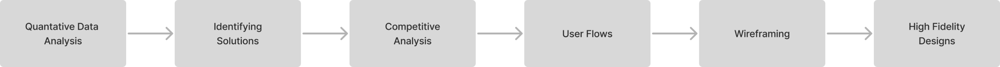
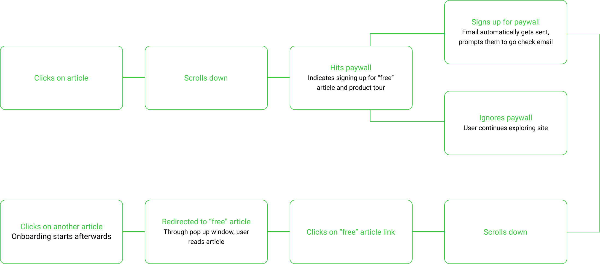
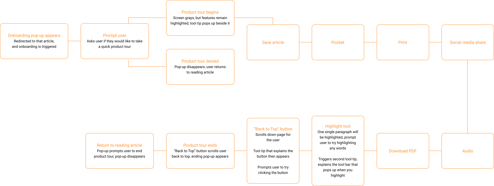
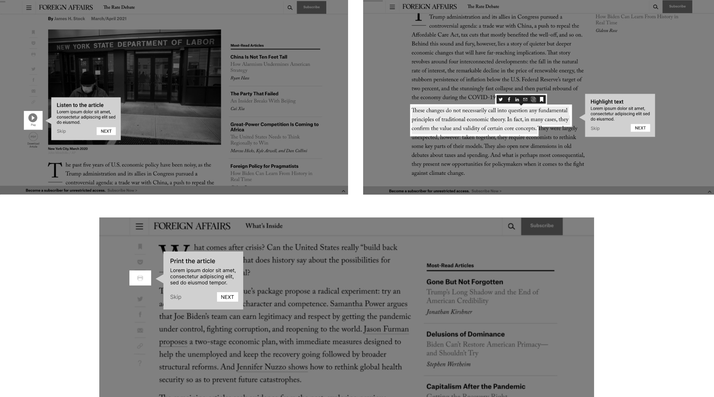

Foreign Affairs is a print and online magazine for in-depth analysis and debate of foreign policy, geopolitics and international affairs.
Scroll down to view more.
UX/UI Design, Wireframing, Competitive Analysis, Data Analysis, User Flow Mapping
March - May 2021

Every quarter, Customer Retention is an important KPI target for the online magazine. Despite an increase in Customer Vsits and Registration (user conversion), there was a decrease in Returning Users in the past year.
Additionally, Foreign Affairs did not have an onboarding process for new users. This was a new strategy that they wanted to implement along with meeting their KPI targets.
Data from Foreign Affairs Google Data Studio (Jan - Dec 2020)
To pinpoint the areas of opportunity and goals, we broke the process into specific steps.
Foreign Affairs uses Google Data Studio to write tests and gather user data. I was tasked with analyzing their marketing and business dashboards and determining user patterns. I focused on the data collected from the prior year (Jan - Dec 2020).
In terms of conversion -- from newsletter registration to transactions -- the largest category of users comes from organic search.
The second and third largest buckets are users that come from direct marketing methods (advertisements and social media) and email campaigns.
Transaction Leads indicating the category of users of each transaction
Within each online magazine article, there are features that users can engage with.
From our engagements dashboard, we can see that there are has been over a 100% increase in user interaction with with these features since the prior year.
We can also see that the options to print, download a PDF version of the article, and listen to the audio version of the article are the most popular. A third of those engagements come from the features used to share an article.
Here we can see that the most popular points of conversion are within the newsletter sign up page, the newsletter banner above the footer, and from the pop-up overlay form. The newsletter sign up page is accessed from the main navigation in the header.
From the newsletters themselves, user appear to visit the site again after they've received their first welcome email from signing up for the first time. Promotional emails return an even higher rate of conversion than that of newly registered users.
Our main takeaways from this analysis:
After consolidating our user data into key points, we saw the opportunity to improve user retention by targeting both subscribers and non-subscribers by emphasizing the popular existing benefits and features on the site. In addition to including this in the new onboarding process for new subscribers, we will also add a product tour to the site to target new users.
Thus, we will be turning our focus on targeting three primary goals:
To find potential solutions for our challenge, I was tasked with identifying successful onboarding design patterns in other competitors. I looked into direct competitors (online magazines or blogs) and productivity tools, since Foreign Affairs is not only a magazine, but also a resource and reference for students and researchers.
Grammarly uses pulsing hotspots to encourage users to click on certain options.
Dropbox uses a large circle to highlight features instead.
Just In Mind has a blog with sidebar features similar to that of Foreign Affairs. When users hover over the icons withing the sidebar, an animation is triggered. The icon will bounce upwards to indicate that it is a clickable button.
Spot indicators to encourage users to click on features
(top row: Grammarly, Dropbox; bottom row: Just In Mind)
For a few days after a user has created an account, Github will have tooltips that appear periodically. These tooltips offer hints that not only inform users of their features, but also promote the use of their product.
Tooltips (from left to right: Github, IBM)
Soapbox encourages users to add items to their agenda by inserting placeholder illustrations and a tip. This not only alerts users that the list is empty, but also provides context on how to add to the list and suggests example items to add.
Slack uses similar messaging to inform their users. They prompt users to complete actions during their onboarding to teach them how to use the product by using suggestions. These messages remain even after their onboarding to continue encouraging engagement within their product.
Medium uses the same strategy as Soapbox to encourage users to add articles if they’ve never posted before.
Suggestions to help nudge users in the right direction
(from left to right: Soapbox, Slack)
To first time visitors, Proposify presents users with an option to take a product tour. This allows users to get to know Proposify's features and tools. If the tour is turned down, a floating indicator button appears in the corner of the site. Users can click on it to reinitiate a product tour.
IBM Cognos Analytics also keeps a floating CTA in the corner to initiate an onboarding. IBM includes a checklist and progress bar to indicate completion as well. Giving the users insight on their progress encourages them to complete the process.
Recurly numbers each setp of the onboarding process to also give users insight on their progress. This informs the user that this process is something that they can quickly complete. They include a “Skip Tour” option to give users the freedom to not take the tour. This keeps the onboarding process non-intrusive.
Giving users the freedom to take a product tour
(from left to right, Proposify, IBM, Recurly)
I created the new user flows for entire onboarding process. We broke down the process itself into two different flows:
Foreign Affairs currently has a paywall user flow. A non-subscriber is able to get a free article a day. After they encounter a paywall for an article and sign up, they will be emailed a link to that free article. This link initiates an product tour, which follows the same flow as the onboarding process. When a non-subscriber reaches the end of the process, they will be brought to a newsletter sign up form.
For a new subscriber, they will be prompted to login to their account from their welcome email. After login in, they will trigger the onboarding process.
After consolidating our findings, we were finally able to move forward with the low-fidelity wireframes. I designed each step based on our user flows.
Quick wireframes of the tooltips that'll feature in the onboarding
Following the finalization of the functionalities of the onboarding process, I completed the high-fidelity designs using the existing design system.
The onboarding process begins differently for subscribers and non-subscribers. However, they both will begin the product tour flow with the same modal. The only difference will be the copy, which targets the two different audiences.
Non-subscriber
Subscriber
The onboarding starts off by introducing the features within the article sidebar with tooltips. They have the option to “Skip” the tour if they change their minds. There is also a progress bar at the top of each tooltip to indicate progress. A dark overlay is added behind the tooltip to put more focus on the tooltips themselves.
These design decisions effectively improve benefit communication and encourage users to enage with the product by bringing awareness to these features to the user.
Introducing the features presented as high-fidelity flow
Finally, the onboarding ends by bringing users to a call to action modal. Non-subscribers are brought to a newsletter sign up form and subscribers to and end-card modal.
Non-subscriber
Subscriber
Foreign Affairs Magazine was the first large scale product that I worked on. This was also the first project in which I was able to research and analyze large sets of data to derive pain points. This project also involved learning more about a new audience that I never encountered before.
I'm really grateful to have had the opportunity to absorb these new experiences through Foreign Affairs.